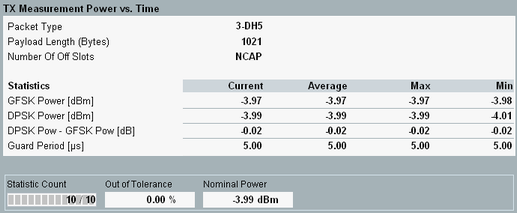
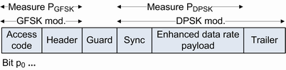

Statistical Power vs. Time Results (EDR)
The "Power vs. Time" view shows an overview of statistical results.

Bluetooth multi-evaluation: power results (EDR)
The power table contains the following values:
- "GFSK Power": Average power (dBm) within the GFSK modulated part of the burst.
- "DPSK Power": Average power (dBm) within the DPSK modulated part of the burst.
- "DPSK Power – GFSK Power": Difference between the two previous results.
- "Guard Period": Length of the guard band between the packet header and the EDR synchronization sequence. The guard band is a field used for physical layer change of modulation scheme.
- "Packet Timing": Timing error between the expected and actual start of the first symbol of the Bluetooth burst. As the expected start is defined by the signaling trigger, this setting is relevant for combined signal path only (options R&S CMW-KS600/-KS610).
- "Nominal Power": Average burst power during the carrier-on state, measured in the EDR filter bandwidth.

Calculation of EDR power results
Additional results in automatic detection mode If automatic burst detection is active ("Input Signal > Detection Mode: Auto"), the "Power Scalars" view also shows the detected packet type and payload length. In "ACP 79 Channels" mode, the number of off slots is displayed in addition. Automatic detection mode is indicated in the upper right corner. |
For query of the results via remote control, see "Power Measurement Results (EDR)".